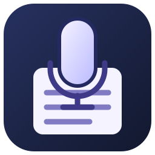

Dictation App
Speak your notes, organise ideas, and manage everyday lists. A simple dark-themed Android note-taking project, also known as My Dictation.
This is open source and created by ChatGPT on my phone S23.
What it does
Record voice notes and use offline Whisper to insert recognised words at the cursor. Recording stops after three seconds of silence or when you tap Stop.
Separate shopping lists, reminders, to-dos and ideas. Keep All Notes and Unfiled in easy-to-find locations.
Black writing area, white text, automatic saving and a recording indicator so you can see when the microphone is active.
Checklists, note colours, long-press selection, and moving or deleting multiple notes with confirmation.
Free downloads
Version 1.5.3 for Android 13 or later on arm64 devices. The APK is the same build installed on the Galaxy S23. The source ZIP includes the Android project, native Whisper source, build instructions, version history and GPLv3 licence.
On first use, the app downloads the Whisper model if it is missing. Subsequent transcription runs on the device.